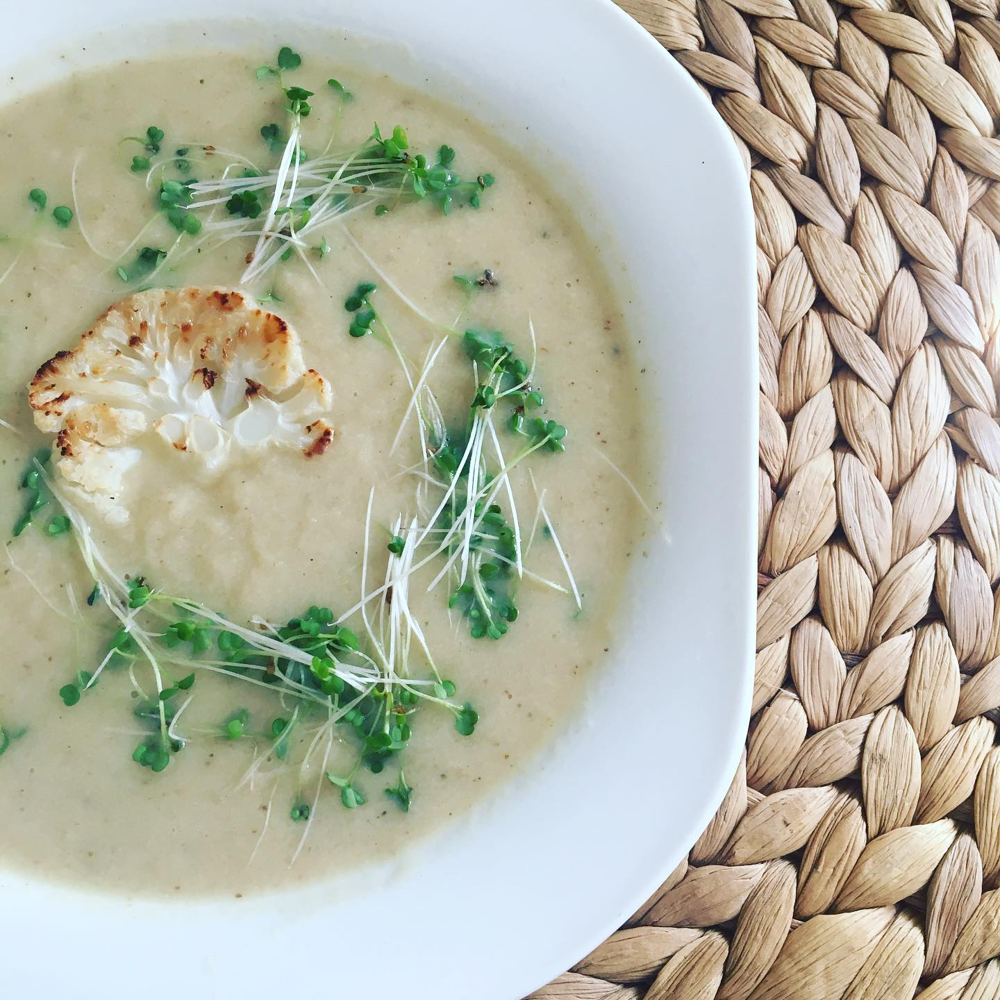

Karfiolová polievka podľa @evamamrillova_tyajoga — Normy Jedál
Krémová polievka z pečeného karfiolu... nechápem, že som ju objavila až teraz 🥸
~rýchla a jednoduchá~ chutná a voňavá~
.
Nakrajany karfiol upecies s trochou oleja a soli (na pekáč davam papier na pečenie).
Cibuľu oprazis na masle alebo oleji a pridas upečeny karfiol. Nechaj si par kúskov na ozdobu. Zalejes vodou alebo zeleninovým vývarom. Dochutis podľa seba - ja davam len sol a čierne korenie, môžeš pridať trochu smotany alebo mlieka (aj rastlinné). Vymixujes a vychutnávaš 😌.
.
Aj samotný pečený karfiol je vynikajuci, dokonca by som povedala, že lepší ako vyprážaná slovenska klasika!
.
A nemôžem si pomôcť, ale chuť, vzhľad a konzistencia tejto polievky mi pripomína sviečkovú omáčku 🙈😆 takze ak hladas ľahšiu verziu sviečkovej, toť skús toto. Kľudne pridaj aj mrkvu a petržlen, určite sa karfiol neurazí. Omáčku urob s menším množstvom vody.
.
#varimbezreceptu #vegansoup #karfiolovapolievka #mindfuleating #jedlojeradost #varenieakorelax